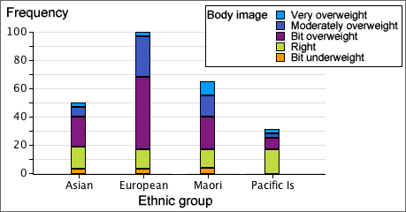
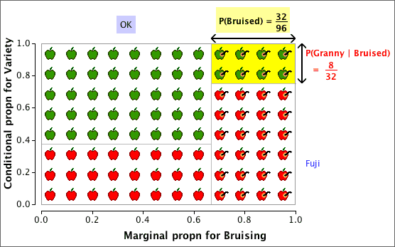
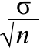
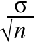
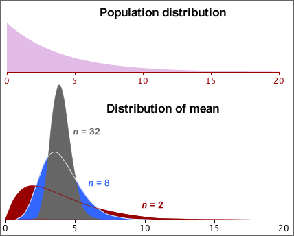
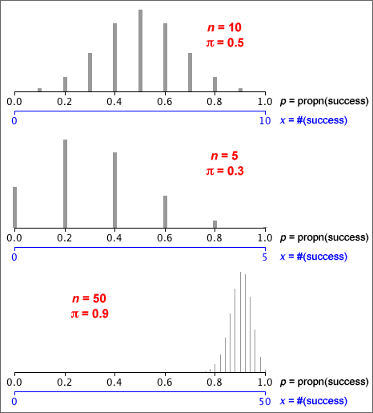
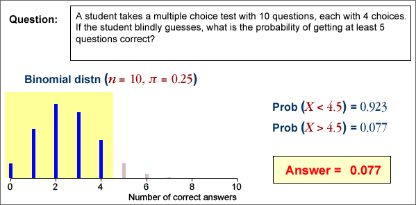
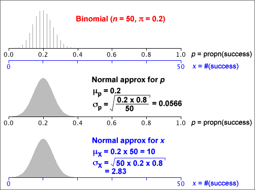

If you don't want to print now,
For any events, A and B, the following properties always hold.
Probabilities are always between 0 and 1
0 ≤ P(A) ≤ 1
Meaning of probabilities 0 and 1
If the event A cannot happen then P(A) = 0
If the event A is certain to happen then P(A) = 1
Probability that an event does not happen
P(A does not happen) = 1 - P(A)
Addition law
When two events cannot happen together, they are said to be mutually exclusive. If A and B are mutually exclusive,
P(A or B) = P(A) + P(B)
If the events A and B are not mutually exclusive,
P(A or B) < P(A) + P(B)
Independence
When sampling with replacement from a finite population, the choice of each value does not depend on the values previously selected. The successive values are then called independent. This also holds when sampling from an infinite population (distribution).
On the other hand, if sampling without replacement from a finite population, successive sample values are not independent since the second value selected cannot be the same as the first value, so knowing the first value affects the probabilities when the second value is selected.
We are often interested in whether a categorical distribution is the same in two or more groups of individuals. The categorical data in each group can be expressed as a frequency table. Combining these frequency tables into a single rectangular array gives a contingency table.
Categorical variables and groups
The raw data may be a list of values from each of several groups (as above) or the groups may be specified by a categorical variable in a single data matrix.

A contingency table may arise from an experiment (where one variable is controlled by the experimentor) or a survey (where there is no control over the individuals).
Example (from experiment)
To test whether vitamin C reduces the risk of catching a cold, a 1961 French study involved 279 skiers over two periods of 5-7 days. Skiers in one group of 139 were given 1 gram ascorbic acid (vitamin C) per day whereas those in the other group were given a tablet that looked similar but had no active ingredient (called a placebo). None of the skiers knew which of the treatments they had received.
| Cold | No cold | |
|---|---|---|
| Ascorbic acid | 17 | 122 |
| Placebo | 31 | 109 |
Example (from survey)
Urine drug screening was performed on 2537 applicants for career craft positions in the US Postal Service's Boston Management Sectional Center. The contingency table below shows the distribution of test results, split by gender. (Those testing positive for more than one drug were classified under the more serious of the drugs, so each individual only contributed to a single cell in the table.)
| Negative | Marijuana | Cocaine | Other drugs | Total | |
|---|---|---|---|---|---|
| Male | 1465 | 146 | 33 | 28 | 1672 |
| Female | 764 | 52 | 22 | 27 | 865 |
Proportions within groups
To compare the distributions of a categorical variable in different groups, it is best to examine the proportions within the groups — the cell frequencies divided by their group totals.
In a study of racial differences in blood types, 145,057 blood specimens from the Blood Bank of Hawaii were tested.
| Blood type | |||||
|---|---|---|---|---|---|
| Ethnic group | O | A | B | AB | Total |
| Hawaiian | 01,903 | 02,490 | 00,178 | 0,099 | 4,670 |
| Hawaiian-white | 04,469 | 04,671 | 00,606 | 0,236 | 9,982 |
| Hawaiian-chinese | 02,206 | 02,368 | 00,568 | 0,243 | 5,385 |
| White | 53,759 | 50,008 | 16,252 | 5,001 | 125,020 |
From the table of within-group percentages below, it is clearer that blood groups B and AB are rarer for Hawaiians and Hawaiian-whites than for the other ethnic groups.
| Blood type | |||||
|---|---|---|---|---|---|
| Ethnic group | O | A | B | AB | Total |
| Hawaiian | 40.7 | 53.3 | 03.8 | 02.1 | 100.0 |
| Hawaiian-white | 44.8 | 46.8 | 06.1 | 02.4 | 100.0 |
| Hawaiian-chinese | 41.0 | 44.0 | 10.5 | 04.5 | 100.0 |
| White | 43.0 | 40.0 | 13.0 | 04.0 | 100.0 |
Bar charts of proportions
Bar charts can be used to graphically compare groups and it is again best to use proportions within groups rather than raw frequencies, especially if the groups are of different sizes.

Clustering the bars
Each cluster of bars above is a valid bar chart for one group. Alternatively, the same bars can be clustered by the variable of interest:

This makes it easier to make comparisons between the groups.
Stacking the bars
The bars for each group in a bar chart can be stacked to help make comparisons between the groups. Stacked bar charts are particularly effective when the categorical variable is ordinal (has categories that can be meaningfully ordered).
The diagram below is a stacked bar chart showing the results from a questionnaire in New Zealand about women's ratings of their own body size. The 246 women all had similar body-mass index and were a little lighter than average for their height.

It is clear from this bar chart that there were more Europeans in the study than in the other ethnic groups. By stacking the proportions within groups, this information is lost but it is easier to see that a bigger proportion of Europeans believe they are overweight than the other groups.

Time series
When sets of categorical measurements are recorded at successive times, time can be treated as a grouping variable.

The diagram below shows the increasing percentage of True values.

Binary variables
When the variable of interest can only take two possible values, it is called a binary variable. If the proportions in each group for one of these values are small, the bars for this category can be shown with an expanded vertical scale — no information is lost since the proportions in the other category are one minus them.

Bivariate data without an explanatory variable
In some bivariate categorical data sets, one variable can be treated as a response whose value depends on the other explanatory variable. The explanatory variable can then be used to split the individuals into groups.
In other bivariate data, the relationship between the variables is more symmetrical but we still want to discover whether particular values of one variable are associated with values of the other. A contingency table again summarises the data.
| Variable X | ||||
|---|---|---|---|---|
| Variable Y | X1 | X2 | X3 | |
| Y1 | 105 | 07 | 11 | |
| Y2 | 058 | 05 | 13 | |
| Y3 | 084 | 37 | 42 | |
| Y4 | 057 | 16 | 17 | |
Graphical display in a bar chart
If we do not want to classify the variables in a contingency table as a response and explanatory variable, the data can be displayed with a 3-dimensional bar chart.

Three-dimensional bar charts are 'interesting' but there are more informative ways to display the data.
Chartjunk and perspective displays
Beware of adding chartjunk and perspective viewpoints to the display — they just make it harder to understand the data.

Clustering bars in 2-dimensional bar chart
Rather than using a 3-dimensional bar chart, it is usually easier to assess the relationships between two variables from 2-dimensional bar charts. The bars can be clustered by either variable and it is often informative to examine both of these displays.

Marginal counts
Although our main interest is usually on the relationship between two categorical variables, it can also be of interest to examine the overall distribution of each variable separately. These are called the marginal distributions of the two variables and are determined by the row and column totals of the contingency table.
| Variable X | ||||||
|---|---|---|---|---|---|---|
| Variable Y | X1 | X2 | X3 | X4 | Total | |
| Y1 | 002 | 003 | 057 | 06 | 68 | |
| Y2 | 052 | 170 | 163 | 17 | 402 | |
| Y3 | 156 | 125 | 061 | 06 | 348 | |
| Y4 | 220 | 083 | 039 | 04 | 346 | |
| Total | 430 | 381 | 320 | 33 | ||
The row and column totals correspond to the heights of the stacks in stacked bar charts. For example, the above row totals are the heights of the stacks in the following diagram.

Marginal proportions
In a similar way, the marginal proportions for the variables are obtained by adding the cell proportions across rows and down columns.
 and
and 
Spliting into groups
If the values of X are used to split the individuals into groups, the conditional distributions of Y given X are the distributions within each of these groups. They are found by dividing the cell counts by the totals for each such group. The columns of the table below show the conditional distributions for a contingency table, expressed as percentages.
| Variable X | |||||
|---|---|---|---|---|---|
| Variable Y | X1 | X2 | X3 | X4 | |
| Y1 | 000.5 | 000.8 | 017.8 | 018.2 | |
| Y2 | 012.1 | 044.6 | 050.9 | 051.5 | |
| Y3 | 036.3 | 032.8 | 019.1 | 018.2 | |
| Y4 | 051.2 | 021.8 | 012.2 | 012.1 | |
| Total | 100.0 | 100.0 | 100.0 | 100.0 | |
The conditional distributions of X given Y are similarly found by using Y to create the groups of individuals. They are found by dividing the cell counts by the totals in the other margin of the original contingency table.
| Variable X | ||||||
|---|---|---|---|---|---|---|
| Variable Y | X1 | X2 | X3 | X4 | Total | |
| Y1 | 02.9 | 04.4 | 83.8 | 8.8 | 100.0 | |
| Y2 | 12.9 | 42.3 | 40.5 | 4.2 | 100.0 | |
| Y3 | 44.8 | 35.9 | 17.5 | 1.7 | 100.0 | |
| Y4 | 63.6 | 24.0 | 11.3 | 1.2 | 100.0 | |
Both tables of conditional proportions (or percentages) are often informative.
Conditional distributions of X given Y and Y given X
The conditional proportions for X given Y can be quite different from the corresponding conditional proportions for Y given X and you must be careful to distinguish between them.
As an extreme example, under 5% of women are pregnant at any time, but 100% of pregnant people are women!
Conditional and marginal distributions
The distinction is between the marginal distribution for a variable and its conditional distributions is illustrated for the following contingency table that describes bruising of 96 apples in a packing plant.
| OK | Bruised | |
|---|---|---|
| Granny Smith | 40 | 8 |
| Fuji | 24 | 24 |
The diagram below shows the apples, arranged in rows by variety.

Observe that:
The apples can be rearranged as follows:

Now observe that:
Data sets with two categorical variables
Bivariate categorical data sets are usually summarised with a contingency table.
For example, a study examined 62 patients who had been given a prescription medicine for some condition. Each patient was classified by whether they had complied with the treatment prescribed and by racial group:
| Race | Compliers | Non-compliers | Total |
|---|---|---|---|
| White | 13 | 10 | 23 |
| Non-white | 13 | 26 | 39 |
| Total | 26 | 36 | 62 |
Joint probabilities
Bivariate categorical data can be modelled as a random sample from an underlying population of pairs of categorical values. The population proportion for each pair (x, y) is denoted by pxy and is called the joint probability for (x, y).
In games of chance, we can often work out the joint probabilities. For example, if a gambler draws a card from a shuffled deck and also tosses a coin, there are eight possible combinations,

Since these are equally likely,
phead, heart = phead, club = ... = ptail, spade = 1/8 = 0.125
Interest in the model
In practice, we usually only have a random sample (summarised by a contingency table) and do not know the underlying joint probabilities. The sample proportions however provide estimates.

Probabilities for a single variable
A model for two categorical variables is characterised by the joint probabilities pxy.
The marginal probability, px, for a variable X is the proportion of (x, y) pairs in the population with X = x . This can be found by adding all joint probabilities for pairs with this x-value.

There is a similar formula for the marginal probabilities of the other variable,

Example
In the following example, the marginal probabilities for X are the row of totals under the table, and the marginal probabilities for Y are the column of totals on the right.
| Variable X | ||||
|---|---|---|---|---|
| Variable Y | X = A | X = B | X = C | Total |
| Y = 1 | 0.2576 | 0.1364 | 0.1212 | 0.5152 |
| Y = 2 | 0.0909 | 0.0758 | 0.0152 | 0.1818 |
| Y = 3 | 0.0455 | 0.0758 | 0.0606 | 0.1818 |
| Y = 4 | 0.0152 | 0.0303 | 0.0758 | 0.1212 |
| Total | 0.4091 | 0.3182 | 0.2727 | 1.0000 |
Probabilities in a sub-population
Conditional probabilities for Y, given X = x
The general definition of the conditional probabilities for Y given that the value of X is x is
They can be found by rescaling of that row of the table of joint probabilities (dividing by px) so that the row sums to 1.0.

Two sets of conditional probabilities
Conditional probabilities for X given that Y has the value y are defined in a similar way:

You should be careful to distinguish between px | y and py | x.
| The probability of being pregnant, given that a randomly selected person is female would be fairly small. The probability of being female, given that a person is pregnant is 1.0 !! |
Proportional Venn diagrams
A proportional Venn diagram is drawn from the marginal probabilities of one variable and the conditional probabilities for the other variable,

Rewriting the definition of conditional probabilities,

The area of any rectangle in the diagram therefore equals the joint probability of the categories it represents.
An alternative proportional Venn diagram can be drawn from the marginal probabilities of Y and the conditional probabilites of X given Y. The area for the rectangle corresponding to any (x, y) is its joint probability, pxy.
Example
The table below is based on the world population in 2002, categorised by region and by age group. It shows the joint probabilities for a randomly chosen person being in each age/region category.
| Age | |||
|---|---|---|---|
| 0-19 | 20-64 | 65+ | |
| Africa and Near East | 0.085 | 0.073 | 0.006 |
| Asia | 0.215 | 0.315 | 0.035 |
| America, Europe and Oceanea | 0.084 | 0.158 | 0.030 |
The two proportional Venn diagrams are shown below.

Note that the areas are the same in both diagrams — they are simply rearranged.
Marginal and conditional probs can be found from joint probs (and vice versa)
We have used three types of probability to describe a model for two categorical variables — the joint probabilities, the marginal probabilities for the two variables and the conditional probabilities for each variable given the value of the other variable. These sets of probabilities are closely related. Indeed, the model can be equivalently described by any of the following.
Each can be found from the others:

Bayes theorem
In particular, note that it is possible to obtain the conditional probabilities for X given Y, px | y, from the marginal probabilities of X, px, and the conditional probabilities for Y given X, py | x. This can be expressed in a single formula that is called Bayes Theorem, but it is easier in practice to do the calculations in two steps, obtaining the joint probabilities, pxy, in the first step. There are several important applications of Bayes Theorem.
Accuracy of medical diagnostic tests
There are two types of error in a test for a medical condition:
Consider a diagnostic test with
p negative | disease = 0.05 ppositive | no disease = 0.10
From these, we can also write
p positive | disease = 0.95 pnegative | no disease = 0.90
We will also assume that 10% of people who are given the test have the disease,
p disease = 0.10
From this information, we can find the probabilities of having the disease, given the result of the diagnostic test,

Sampling mechanism
The mechanism of sampling from a population explains randomness in data.

In practice, we must use a single sample to find information about the population.

Parameters and statistics
We usually focus attention on a small number of numerical characteristics.

Variability of sample statistics
The variability in random samples also implies sample-to-sample variability in sample statistics.

Distribution of the sample mean
The mean of a random sample of n values is a random quantity. Its distribution is centred on the population mean but its spread is lower then that of the population distribution.
Centre and spread of the sample mean's distribution
We can be more precise. If the population has mean µ and standard deviation σ, then the mean of a sample of n values,  ,
has a distribution with mean and standard deviation:
,
has a distribution with mean and standard deviation:
 = μ
= μ
 = 
= 
Shape of the mean's distribution
Whatever the shape of the population distribution,
 = μ
= μ  =
=
However skewness in the population distribution leads to some skewness in the distribution of the mean.
Samples from normal populations
When the population distribution is normal, the sample mean also has a normal distribution.
 ~ normal (μ , )
~ normal (μ , )

Means from non-normal populations
Irrespective of the shape of the population distribution,
 = μ
= μ  =
=
If the population is not a normal distribution, the sample mean does not have a normal distribution. However the Central Limit Theorem states that...
For most non-normal population distributions, the distribution of the sample mean becomes close to normal when the sample size increases.

Need for multiple values to assess variability
We usually need to make two or more measurements of a variable to get any information about its variability. A single value contains no information about the quantity's variability.
Achieving the impossible?
Fortunately, we do not need multiple sample means to assess the variability of a sample mean. Its distribution can be estimated from a single sample using
 = μ
= μ
 =
=
The distribution of the mean can be approximated with a normal distribution with this mean and standard deviation, if we replace µ
and σ with  and s.
and s.

Independent random samples
The formula for the standard deviation of a sample mean,
 =
=
is only accurate if the sample values are independent.
Dependent random samples
When sample values are correlated with each other, they are said to be dependent and the formula

can badly underestimate the variability (and hence accuracy) of the sample mean of dependent random samples.
Always check that a random sample is independently selected from the whole population before using the formula for the standard deviation of the sample mean.
Sampling with replacement from finite populations
When a random sample is selected with replacement from a finite population, the sample values are independent and the standard deviation of the sample mean is again
 =
=
Note however that the population standard deviation, σ, uses divisor N, the number of values in the population, rather than (N - 1).

Sampling without replacement from finite populations
When a sample is selected without replacement, successive values are no longer independent — if a large value is selected, it cannot be selected again, so the next value will tend to be lower.
For sampling without replacement, a different formula should be used for the standard deviation of the sample mean:

The quantity (N - n) / (N - 1) is called the finite population correction factor. It can usually be ignored if only a small fraction of the population is sampled (say under 5%).
A sample proportion has a distribution
If a categorical data set is modelled as a random sample from a categorical population, the sample proportions must be treated as random quantities — they vary from sample to sample.

The population proportion in a category is called its probability, and is often denoted by π. The corresponding sample proportion is usually denoted by p.
| Sample Statistic | Population Parameter | |
|---|---|---|
| Mean | µ | |
| Standard deviation | s | σ |
| Proportion/probability | p | π |
In practice, we only have a single sample and must use it to get information about the underlying population.

Properties of a sample proportion
A sample proportion from a random sample of size n has a distribution that ...
Count and proportion of successes
Although the sample proportion in a category, p , is a good summary statistic, the raw count of sample values in the category, x = np, contains equivalent information and is often easier to use. They have distributions with the same shape (other than the scaling constant n).

General notation
In a categorical population, we choose one category of interest and call it success; all other categories are collectively called failures. The population proportion of successes is denoted by π.
When a random sample of n values is selected, we denote the number of successes by x and the proportion of successes by p = x/n.
Distribution of a sample proportion
The number of successes, x , has a 'standard' discrete distribution called a binomial distribution which has two parameters, n and π.
In practical applications, n is a known constant, but π may be unknown. The sample proportion, p , has a distribution with the same shape, but is scaled by n .

Assumptions underlying the binomial distribution
Evaluating binomial probabilities
They may be obtained using ...
A range of counts
Finding the probability that the number of successes is within an interval involves adding the binomial probabilities for all integer values in the interval.
Think carefully about the wording of the interval — does it include the values at the end? Adding or subtracting 1/2 to the endpoints of the interval makes it clearer. (This is also particularly useful when using the normal approximations that are described in the following pages.)
| In words... | In terms of X | Using 1/2 |
|---|---|---|
| More than 5 | X > 5 | X > 5.5 |
| Greater than or equal to 5 | X ≥ 5 | X > 4.5 |
| No more than 5 | X ≤ 5 | X < 5.5 |
| At least 5 | X ≥ 5 | X > 4.5 |
| Fewer than 5 | X < 5 | X < 4.5 |
| 5 or fewer | X ≤ 5 | X < 5.5 |
The following example illustrates the use of 1/2 in this way.

Mean and standard deviation of x and p
The mean and standard deviation are given below for the proportion of successes p , and number of successes, x = np

The fact that both x and p are approximately normally distributed in large samples is justified below.
Proportions and means
If we assign a code of '1' to the successes and '0' to the failures in the random sample, then the resulting values are called an indicator variable. Its mean is identical to the proportion of successes.

Since the proportion of successes in a sample is a kind of mean, its distribution is close to a normal distribution if the sample size is large enough.

Use of the normal approximation to the binomial distribution
To avoid adding large numbers of binomial probabilities, the normal approximation can be used to find the probability that a binomial variable is within a certain range when the sample size, n , is large.
A common rule-of-thumb for when this kind of normal approximation can be used is:
nπ > 5 and n(1-π) > 5
An example is given below:

Note the translation of the range of values into one involving 1/2. It is called a continuity correction in this context.